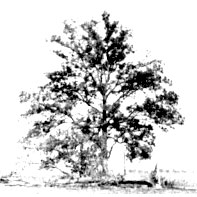

Pecan trees in Canada? A far-north, native species makes it possible!
Northerners can go "nuts" over pecans, too!
Does the thought of roasted pecans and pecan pies make your mouth water? Well, here's some good news for residents of the northern United States and southern Canada: You may soon be able to grow these valuable nuts right in your own back yard!
Although the pecan is usually thought of as a resident of the Deep South, a few native stands of these noteworthy nut producers are known to exist along the Missouri River in north central Missouri and the Mississippi River near Dubuque, Iowa. Early settlers even reported finding pecans on the Ohio River as far north as Pittsburgh, Pennsylvania. But, unfortunately, most of these northern strains have long since fallen to "civilization". You can imagine the excitement, then, when naturalists discovered a few scattered native trees as tar north as southern Wisconsin!
Pecan trees (which can live for 500 years) originated in northern Texas and southern Oklahoma, and were spread along the canoe-trails of the American Indians. (The word "pecan" comes from the Indian word paccan : "food which has to be cracked out of a hard shell".) These nuts-once a staple of the Indian diet-were easy to collect and highly nutritious, stored well, and were good for barter.
It's believed that the native Americans planted pecans in the vicinity of regularly used campsites to provide "grubstakes" for their descendants. And-since the Indians preferred to plant the biggest and thinnest-shelled species-this "cultivation" not only increased the growing range of the beautiful shade tree but greatly improved the quality of its nuts as well!
But no one realized just how widely the tree had actually been spread until recently, when some fine examples of the "northern" pecan were found hidden away in the rugged forests of southern Wisconsin and in the northernmost regions of Iowa and Illinois. These old trees, which grow as far as 300 miles north of the currently available northern pecans, make it feasible to adapt the nut tree to much colder climates than modem growers had previously thought possible!
Members of the Northern Nut Growers Association (NNGA)-a non-profit group dedicated to the promotion of nut growing in the north-have already made exploratory expeditions into this extreme northern range of the pecan. And, as a result of their efforts, a "distribution program" of this rare species is being sponsored-as a public service-by the NNGA.
You see, it was discovered that the few remaining trees are located in fertile bottomland immediately adjacent to rivers . . . areas that are coveted for the production of corn. And sadly enough, there is strong pressure to destroy these remarkable old stands. So, not only does participation in this program offer northern residents the opportunity to grow some super-tasty nuts ... it may also be the last chance to save and regenerate this hardiest of northern pecans.
To obtain a packet of eight of the rare seeds, send a $3.00 check (made payable to "NNGA Pecan Seed Program") to the Northern Nut Growers Association, Inc., Attention: John H. Gordon, Jr., 1385 Campbell Boulevard, North Tonawanda, New York 14120. (Or, for $8.00, you can join the NNGA. Members may buy the seed packet for $2.00 . . . and they get a quarterly newsletter as well and an annual report chock-full of information on growing northern nut species.) However, your order must be received by March 20, 1979 in order to be processed in time for the '79 growing season. That's just days away . . . so you're going to have to act NOW!
In return for providing the seeds, the NNGA will request participants in their program to fill out occasional questionnaires about the performance of the trees over the next 5 to 20 years.
Complete growing instructions will be sent with each seed packet, but it should be remembered that seed-grown trees produce seedlings with a wide range of characteristics. In previous tests, though, the germination performance has averaged 60%, and many of the parent trees have survived winter temperatures as low as - 35° F and have ripened well-filled nuts in seasons as short as 130 frost-free days.
And-although the nuts of these trees are somewhat smaller than the "paper-shelled" pecans produced by their southern cousins-northern pecan kernels are some of the sweetest known to exist!
|
 |
|
|